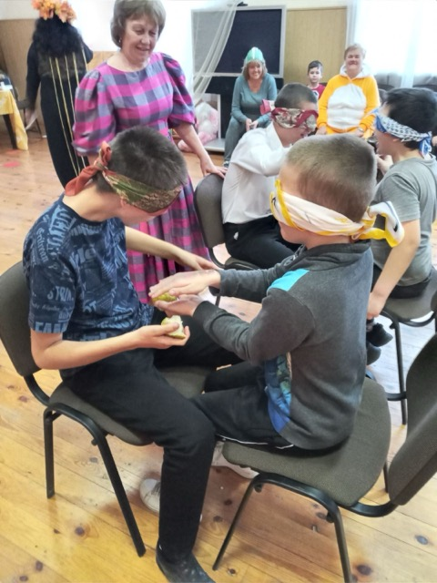
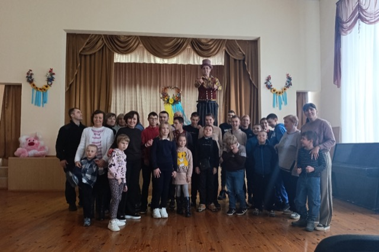
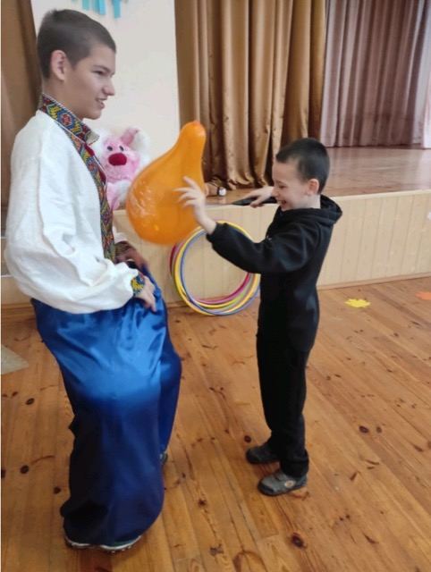
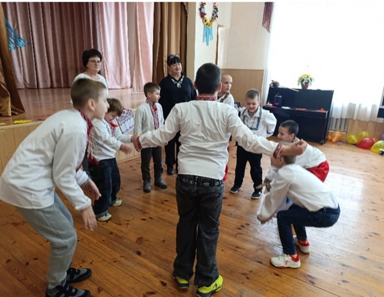
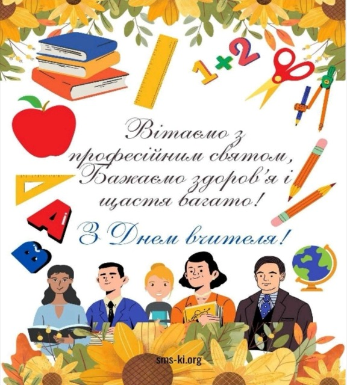
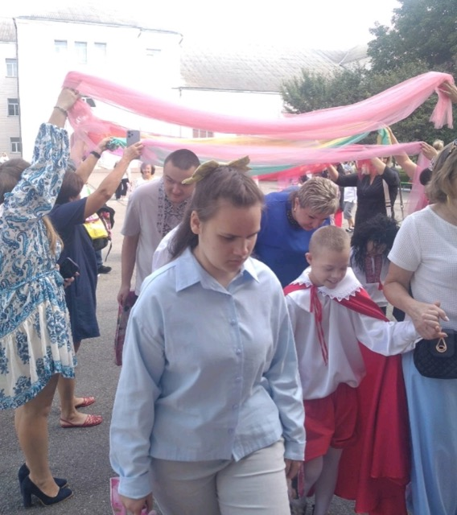
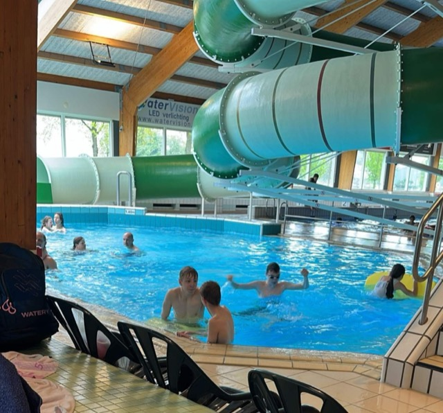
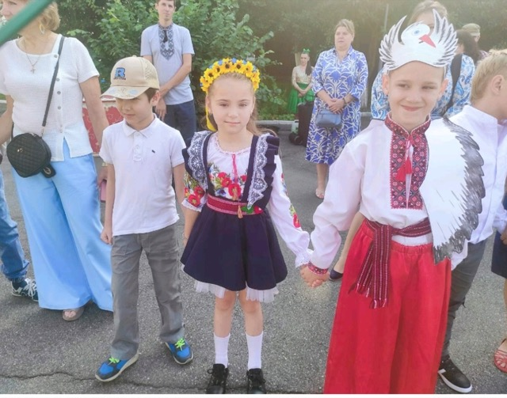
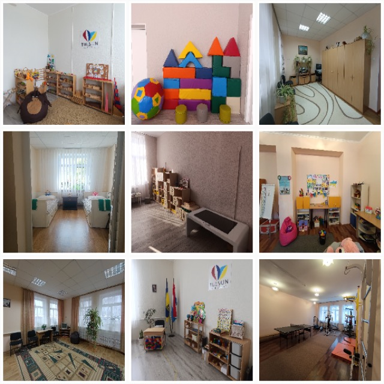
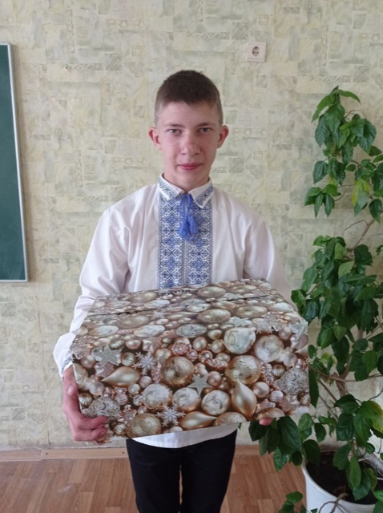

Новини
-

Осінній бал
«Осінній бал» - це завжди свято. В цей день було радісно, весело, святково усім дітям і дорослим. Королева осінь продемонструвала свої дари у вигляді…
-

Зустріч із литовськими друзями
14 жовтня 2025р. для вихованців центру Департамент освіти і науки Київської обласної державної адміністрації організував цікаву зустріч з литовськими…
-

День кульок: «Гра — королева дитинства»
Конкурсно-розважальна програма «На повітряній кулі» проведена по групах. Діти з радістю подорожували казковим містечком. Цікаві ігри з яскравими кульками…
-

Козачата запрошують на свято
1 жовтня в актовій залі до Дня захисників і захисниць України зібралися учні центру на цікаві змагання, виконання патріотичних пісень, вікторини. Все це…
-

День працівників освіти
Привітання працівників навчально-реабілітаційного центру заквітчане виставкою композицій, вітальною газетою та емблемами, виготовленими старшокласниками з…
-

Перше вересня 2025
У казку всі попали діти, Феї, Чародії змусили їх радіти. Ігри, руханки, чарівна скриня з подарунками, лелеченя з хлібом-сіллю – все це об’єднало всіх…
-

Літнє оздоровлення дітей у Нідерландах
У період з 01.06.2025р. по 31.08.2025р. було проведено літнє оздоровлення дітей-сиріт та дітей позбавлених батьківського піклування, які тимчасово…
-

Останній дзвоник «Дитинства світ»
Шкільний потяг символічно робив зупинки на станціях «Веселий художник», «Розважальна», «Дружба». 6 випускників отримали свідоцтва про закінчення центру,…
-

Набір учнів до 1 класу на 2025–2026 навчальний рік
КЗ КОР «Трипільський навчально-реабілітаційний центр» Проводить набір учнів до 1 класу на 2025 – 2026 навчальний рік Список необхідних документів: Заява…
-

День святого Миколая 2024
6 грудня в нашому закладі пройшло свято - День Святого Миколая. Цей день сповнений тепла, радості та вдячності ми зустріли добрими справами, усмішками та…